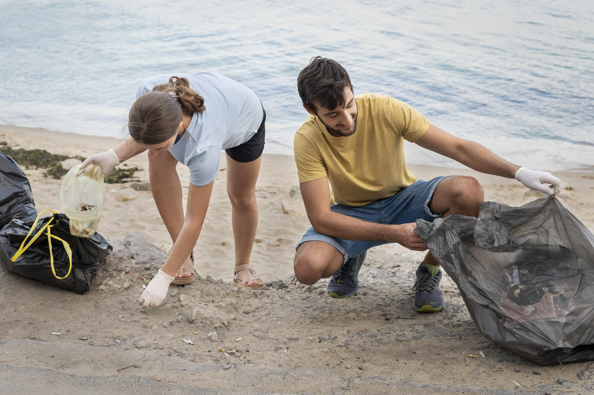
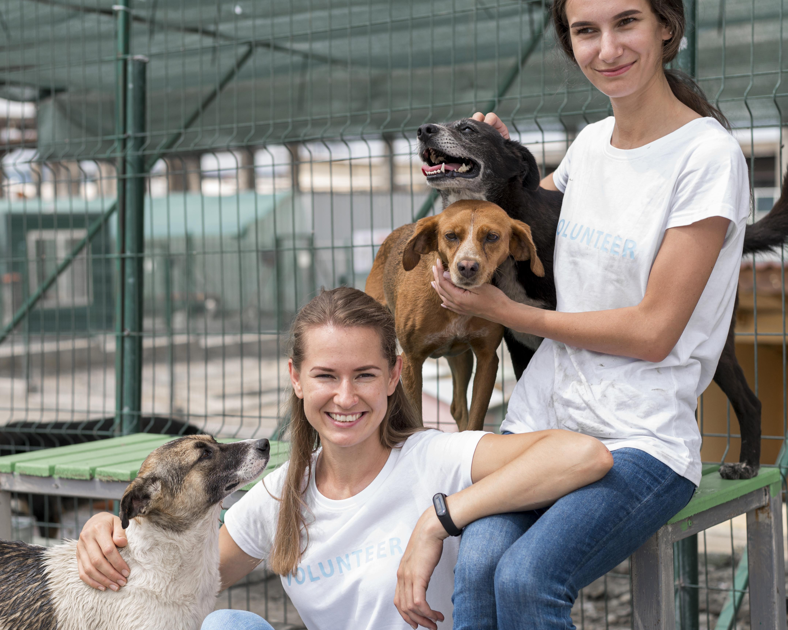
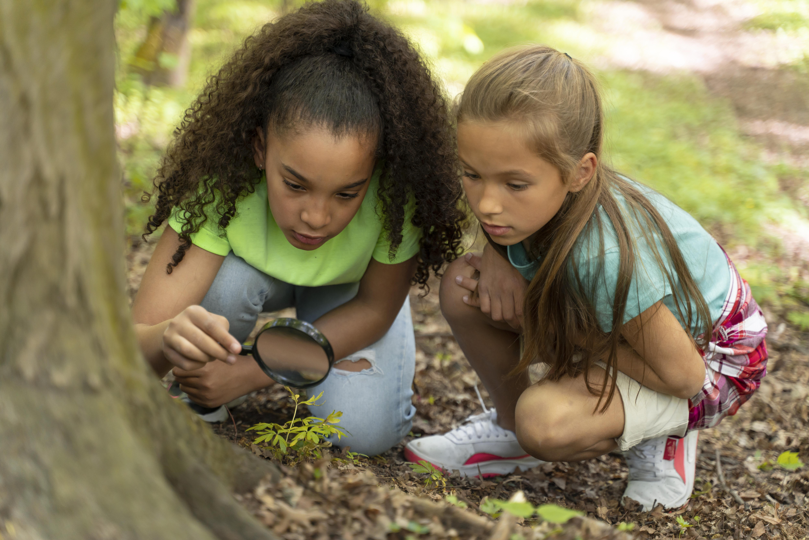

Volunteer For Life On Earth

Sea the Change
Lets put our hands together to protect our island realms.Sea the Change is a volunteering progamme aimed at protecting marine life and coastal ecosystems through regular beach cleanups.
| 🕒Duration : | 3 Weeks |
| 💰Programme fee : | 15000lkr |
| 📍Location : | Negombo |

ReLeaf Earth
Join with us to Plant 10 000 trees around Colombo. Colombo is becoming more and more commercialized day by day. With this the Green Colour is fading day by day. Lets plant 10000 trees together.
| 🕒Duration: | 2 Weeks |
| 💰Programme fee : | 10000lkr |
| 📍Location: | Colombo |

Paws of Hope
Paws of Hope is a heartfelt volunteer programme dedicated to supporting animal shelters and caring for abandoned, injured, or stray animals. Volunteers play a vital role in providing daily care, love, and companionship to animals in need.
| 🕒Duration: | 1 Week |
| 💰Programme fee : | 10000lkr |
| 📍Location: | Mirissa |

Green Guardians
Green Guardians includes projects focused on protecting endangered species, such as elephants, sea turtles, and lemurs. Volunteers may participate in research, habitat monitoring, and community outreach.
| 🕒Duration: | 1 Month |
| 💰Programme fee : | 20000lkr |
| 📍Location: | Sinharaja rain forest |

Future Earthkeepers
Future Earth Keepers is a volunteer programme designed to educate children about biodiversity and the importance of protecting our planet's natural ecosystems.through fun and interactive sessions.
| 🕒Duration: | 3 Weeks |
| 💰Programme fee: | 15000lkr |
| 📍Location: | Viharamahadevi park |
🍃Community Ratings
9/10 Amazing Experience
I volunteered for paws of hope. it’s an amazing and rewarding experience. While there are many tough chores, like cleaning up after the animals and washing their dirty beds, there are also fun ways to directly interact with the animals. I always love walking around and deciding which dog to take to the training room to teach new tricks.And also See more
- Onella Fernando, Oct 15, 20248/10 Learned new things
I volunteered for the project "Green Guardians".I learned about lots of endangered animals and plants.There was a guide for the whole project and trust me he knows everything!. We spent our days monitoring habitats and lot more things. See more
- Tesh Perera, Aug 15, 20259 /10 Wonderful Experience
Paws of Hope was a wonderful experience!! The work with the dogs together with other volunteers and the team was one of the best experiences in my life and I will definitely come back!! See more
- Ananya Senevirathne, Sept 20, 20247/10 Amazing Experience
I volunteered for "Sea The Change" programme and it was an amazing experience. I actually saw the CHANGE. Im so happy I took part of this as our island is surrounded by beaches and we have to keep our beautiful beaches clean.I'll volunteer again for sure. See more
- Chanuka Mayantha, Oct 10, 2024